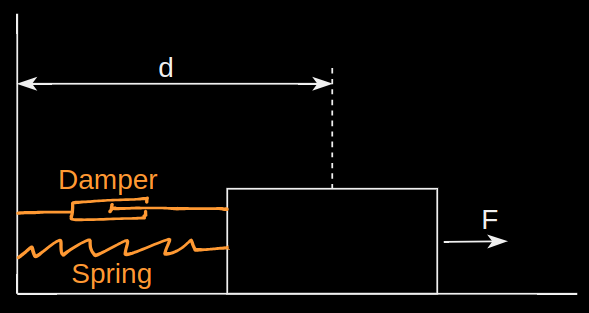
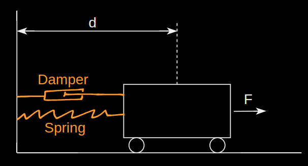
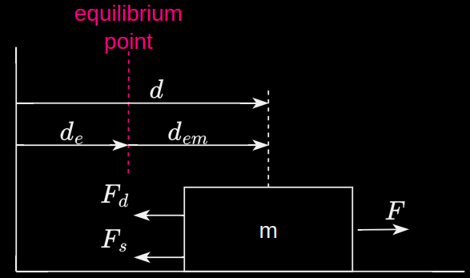

Mass spring damper

Wheeled cart attached to a wall with a spring and damper, rolling without friction on a floor.
At equilibrium, there is no horizontal force acting on the spring - the system is at rest.

Free body diagram
$$\begin{array}{ccl}
d_{em} &:& \text{Distance of the CoM from the equilibrium point} \\
d &:& \text{Distance of the CoM from the origin} \\
d_e &:& \text{Distance of the equilibrium point from the origin}
\end{array}$$
Aim
An analytical solution to the equation of motion can be found, given the initial condition and the external force. But, the goal is to find a numerical solution using the state-space form.